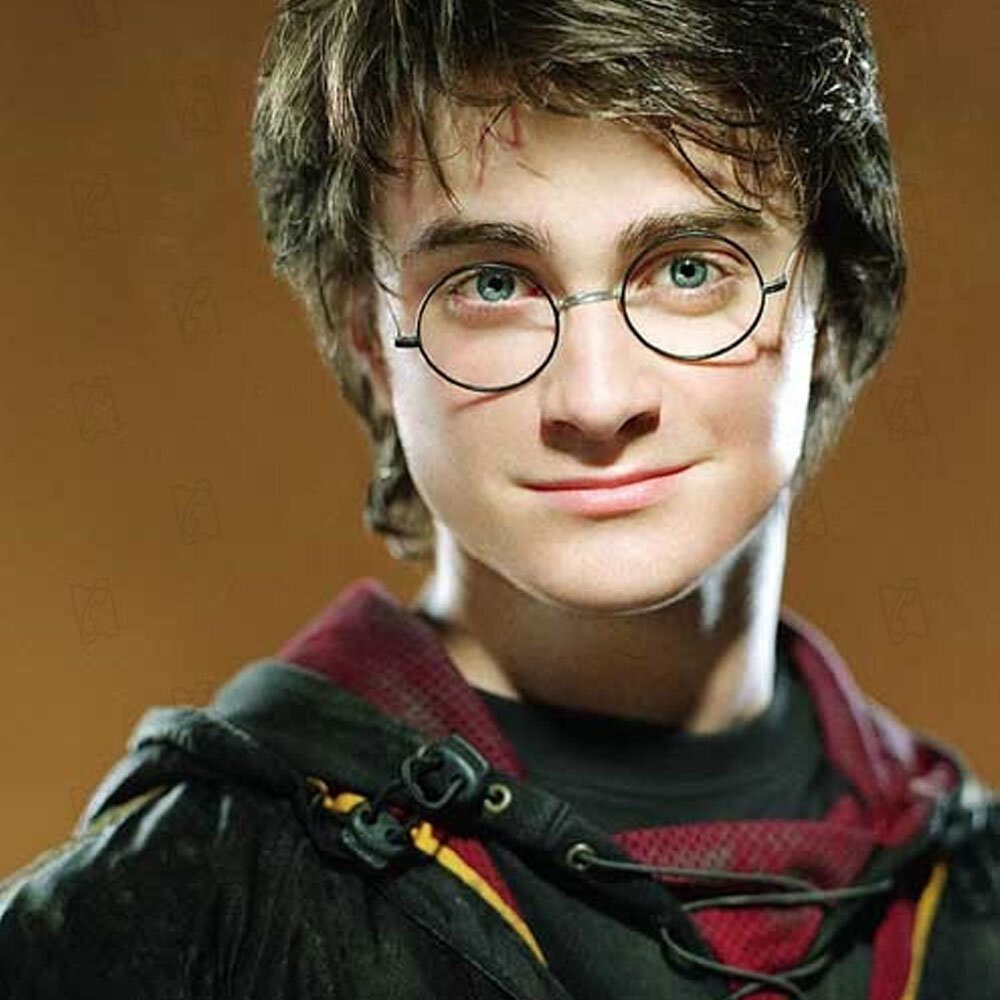

Merhaba Ben Alperen Arslan. Şu anda Patika.dev üzerinden front-end eğitimine başladim
Hedefim bu patika bittikten sonra front-end back-end patikalarini bitirip full stack developer olma yönünde ilerlemek.
Vikings. Bir orta çağ viking dizisi. Vikingleri, savaşlarını, yaşam tarzlarını, dinlerini kısaca vikinglere dair bir çok şeyi anlatan bu yapım gerçekten çok başarılı
Bir süre Ana Karakter Ragnar Lothbrok'un yükselişi maceraları ve hikayesini anlatan bu dizi daha sonraları oğullarının hikayeyi devralmasıyla devam ediyor.
Mutasyona uğramış bir canavar avcısı olan Rivyalı Geralt, insanların çoğunlukla yaratıklardan daha uğursuz olduğu, karmaşa içindeki bir dünyada kaderine doğru yol alıyor. Henry Cavill; canavar, büyü ve kader konulu dizinin başrolünde.
Bir Star Wars evreni dizisi Bir Mandolarianın hikayesini maceralarını ve evrenin o zaman diliminde ki durumunu konu alıyor. Kesinlikle izlemenizi tavsiye ederim.
Film, başkahramanı genç asilzade Paul Atreides'in ailesini ve evrenin geleceğini kurtarmak için benzersiz enerji kaynağı “baharat” peşinde verdiği gezegenler arası mücadeleyi anlatıyor.
Ana hikâye Harry'nin karanlık bir büyücü olan Lord Voldemort'un ölümsüz olmayı, Sihir Bakanlığı olarak bilinen büyücü yönetim kurulunu devirmeyi ve tüm büyücüleri ve Muggle'ları (büyülü olmayan insanlar) boyun eğdirmeye çalışması ve buna karşı bir hayat mücadelesi vermesidir.
Yüzük Kardeşliği, dünyanın kaderini değişterecek olan yüzükten kurtulmak için verilen mücadeleyi konu ediyor. Yıllar önce üretilen ve Orta Dünya topraklarına kandan başka hiçbir şey getirmeyen yüzüklerin sonuncusu, üretiminden yüz yıllar sonra ortaya çıkar.
Bir pazarlama şirketinde çalışan Gregor Samsa’nın bir sabah uyanışında böceğe dönüşünü ele alan kitap, bu değişim sonucunda ailenin o bakış açısı ve Gregor Samsa’nın böceğe dönen haline alışma sürecini ele alır.
12 yaşındaki Meggie, tıpkı babası Mortimer gibi bir kitap kurdudur. İkisinin de yüksek sesle kitap okudukları zaman, kitapta yazanları canlandırıp gerçek dünyaya getirme yeteneği vardır. Fakat kitap sayfalarından çıkan herkese karşılık, biri kitabın içine kaçmaktadır.(10-20 yaş arası kitap konumundadır)